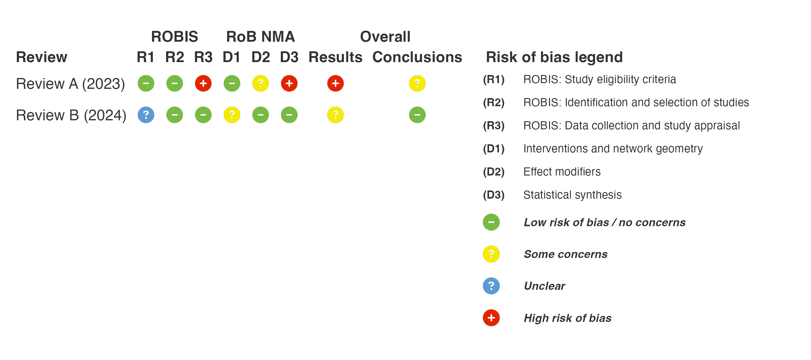
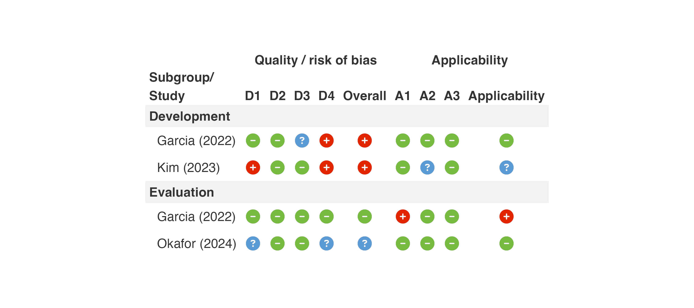

Supported risk of bias tools
rob-tools.Rmdrob_tool |
Tool | Domain columns | Overall columns | Judgements |
|---|---|---|---|---|
"rob2" |
RoB 2 (incl. cluster and crossover variants) | D1, (D1b), D2–D5, (DS) | Overall | Low, Some concerns, High |
"robins_i" |
ROBINS-I V2 (2025) | D1–D6 | Overall | Low, Low (except confounding), Moderate, Serious, Critical |
"robins_e" |
ROBINS-E (2024) | D1–D7 | Overall | Low, Low (except confounding), Some concerns, High, Very high |
"quadas2" |
QUADAS-2 | D1–D4 | Overall | Low, Unclear, High |
"clarity" |
CLARITY | D1–D10, (D11), (D12) | None | Definitely/Probably low, Probably/Definitely high |
"rob_nma" |
RoB NMA (+ ROBIS 1–3) | (R1–R3), D1–D3 | Results, Conclusions | Low, Some concerns, High |
"probast" |
PROBAST (2019) | D1–D4, (A1–A3) | Overall, Applicability | Low, Unclear, High |
"probast_ai" |
PROBAST+AI (2025) | D1–D4, (A1–A3) | Overall, Applicability | Low, Unclear, High |
Columns in brackets are optional. NA is shown as “Not
applicable”.
RoB NMA
library(robbR)
nma_data <- tibble::tibble(
Author = c("Review A", "Review B"),
Year = c(2023, 2024),
R1 = c("Low", "Unclear"),
R2 = c("Low", "Low"),
R3 = c("High", "Low"),
D1 = c("Low", "Some concerns"),
D2 = c("Some concerns", "Low"),
D3 = c("High", "Low"),
Conclusions = c("Concerns", "No concerns"))
rob_plot(nma_data, rob_tool = "rob_nma", add_rob_legend = TRUE)
PROBAST+AI
probast_data <- tibble::tibble(
Author = c("Garcia", "Kim", "Garcia", "Okafor"),
Year = c(2022, 2023, 2022, 2024),
Subgroup = c("Development", "Development", "Evaluation", "Evaluation"),
D1 = c("Low", "High", "Low", "Unclear"),
D2 = c("Low", "Low", "Low", "Low"),
D3 = c("Unclear", "Low", "Low", "Low"),
D4 = c("High", "High", "Low", "Unclear"),
A1 = c("Low", "Low", "High", "Low"),
A2 = c("Low", "Unclear", "Low", "Low"),
A3 = c("Low", "Low", "Low", "Low"))
rob_plot(probast_data, rob_tool = "probast_ai", subgroup = TRUE, sort_subgroup_by = c("Development", "Evaluation"))